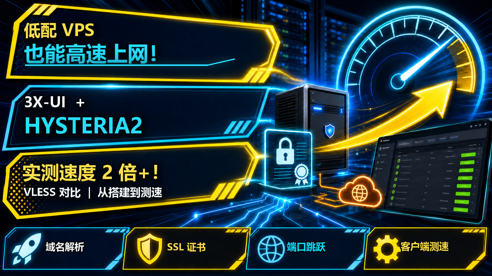
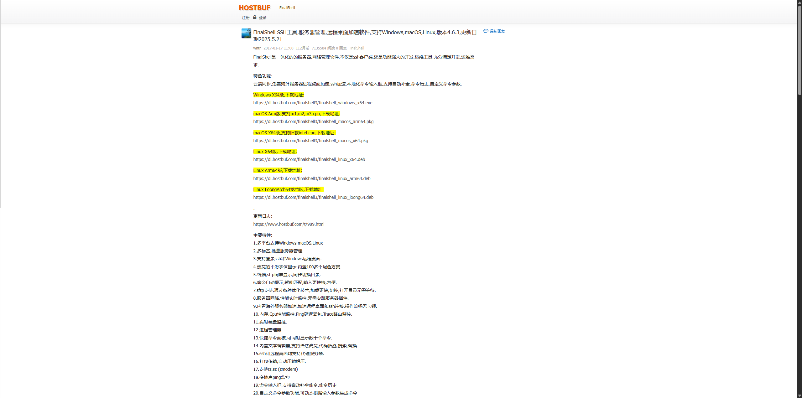
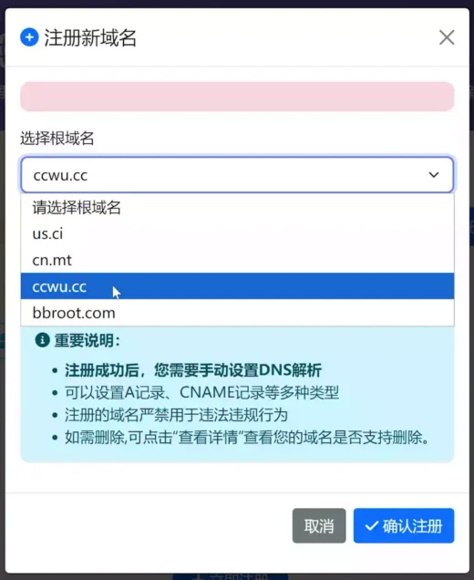
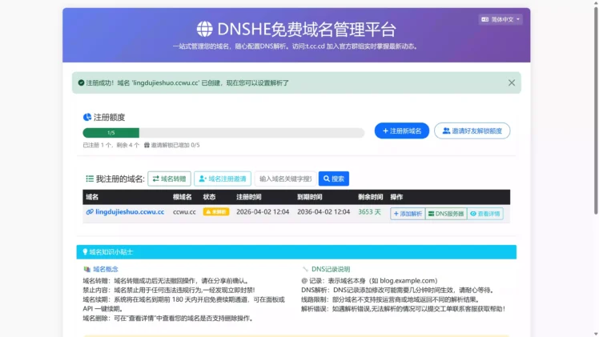
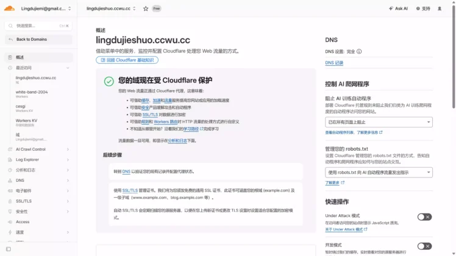

🌍【2026新版】X-UI + Cloudflare SSL + Hysteria2 节点搭建教程

🔥 一、本期视频同款配置
1. VPS 服务器
2. 静态住宅 IP
-
👉 本期视频同款静态 IP（Webshare）：点击跳转
-
💳 国际虚拟卡申请教程：
▶️ Bybit U卡（台湾） ▶️ Bybit U卡（哈萨克斯坦）
3. 账号合租平台
🚌 环球巴士 · 借个号（短期会员租赁推荐）（付款输入“lanyun”可再打9折）：点击跳转
🛠️ 二、配套软件与工具
-
FinalShell 官方网站：点击下载
-
V2rayN（Windows 电脑版）**：点击下载
-
V2rayNG（Android 手机版）**：点击下载
-
Clash Verge Rev（Windows 电脑版）**：点击下载
-
Clash Meta for Android（Android 手机版）**：点击下载
-
网络测速工具：点击使用
-
IP 信息检测：点击使用
-
交流群：点击加入
🔗 三、独享节点（VPN）搭建
1. 服务器远程连接工具
FinalShell：点击进入官方网站
2. 3X-UI 一键部署命令
在 FinalShell 中复制并执行下面的命令：
固定安装 3X-UI v3.6.0（与本教程版本保持一致）
📋 上方是视频中用到的软件及相关网址
💗 饮水思源，感谢 3X-UI 原作者 mhsanaei 的开源奉献！
➡️ 3X-UI 官方原项目地址：点击进入
本篇直接进入实际操作，完整流程：
第一步：使用 FinalShell 连接 VPS，并安装 3X-UI
FinalShell 是一款支持 SSH 和 SFTP 的服务器管理工具，我们主要使用它连接 VPS 并执行 Linux 命令。
FinalShell 官网：
Windows版本下载：

安装完成后打开 FinalShell：填写 VPS 信息：
连接成功后，可以先输入：
返回：
说明当前已经获得 Root 权限。
然后执行 3X-UI 官方一键安装命令：
按照安装程序提示完成配置。（可以直接无脑回车）
安装结束后重点保存：
之后随时可以通过：
重新进入 3X-UI 管理菜单。
注意：命令是
x-ui，不是3x-ui。
安装成功后，先使用安装程序给出的地址测试面板：
例如：
能够进入面板，就说明 3X-UI 安装成功。
技术知识：3X-UI 是什么？
3X-UI 本身可以理解为一个可视化管理面板，真正负责节点连接和数据传输的是底层的 Xray-core。
因此：
我们后面创建 VLESS、Trojan、Hysteria2 等节点，本质上都是通过 3X-UI 生成并管理 Xray 配置。
第二步：将域名托管到 Cloudflare，并解析到 VPS
- [第一步]：
为了后续申请 SSL，我们需要先准备一个域名，并让这个域名解析到当前 VPS。注册一个永久免费的域名，下方就是视频所示的免费域名注册链接：
免费域名注册网站：点击跳转
注册登入以后，即可注册5个永久免费的域名，根域名选择ccwu.cc 或者 us.ci 都是完全免费的！


- [第二步]：
注册并登入 Cloudflare 平台，然后将上方注册的免费域名托管进去

进入 Cloudflare 后添加自己的域名。
Cloudflare 会分配两条 Nameserver，例如：
回到购买或申请域名的平台，把原来的 NS 修改成 Cloudflare 提供的两条 Nameserver。
等待 Cloudflare 中域名状态变成：
说明域名已经成功托管到 Cloudflare。
接下来进入：
建议单独创建一个用于 3X-UI 的子域名。
例如主域名：
创建：
DNS 记录填写：
最终结构：
前期建议 Cloudflare 保持：
也就是灰色云朵。
这样域名只是负责 DNS 解析，不让 Cloudflare 参与实际连接，方便后面排查端口、SSL 和 Hysteria2 的 UDP 连接。
配置完成后，Windows 打开 CMD：
如果返回的 IP 与 VPS 公网 IP 一致：
说明解析已经成功。
技术知识：域名和 SSL 是什么关系？
域名解析解决的是：
也就是“这个域名到底对应哪台服务器”。
SSL 解决的则是：
因此必须先完成域名解析，再给这个域名申请 SSL。
第三步：通过 3X-UI 给域名配置 SSL
完成 Cloudflare 域名解析后，可以使用 3X-UI 内置的 SSL 管理功能申请证书。
本教程使用的是：
因此不需要创建 Cloudflare API Token，但需要满足以下条件：
如果必须保持 Cloudflare 代理，或者服务器无法开放 TCP 80，则应改用 3X-UI 的 Cloudflare SSL 功能，并配置 Cloudflare API Token，不适合继续使用本节方法。
1. 打开 3X-UI 管理菜单
重新打开 FinalShell，连接 VPS 后输入：
回车进入 3X-UI 管理菜单。
我使用的版本中，SSL 管理对应：
输入：
然后回车。
不同版本的菜单编号可能发生变化。如果你的编号不是
20，请以菜单中的SSL Certificate Management名称为准。
2. 申请域名 SSL 证书
进入 SSL 管理界面后，会看到类似以下选项：
1. Get SSL (Domain)
2. Revoke & Remove
3. Force Renew
4. Show Existing Domains
5. Set Cert paths for the panel
6. Get SSL for IP Address (6-day cert, auto-renews)
0. Back to Main Menu
这里选择：
输入：
然后回车。
根据提示输入已经解析到当前 VPS 的完整域名，例如：
这里只填写域名本身，不要添加：
正确示例：
错误示例：
如果终端显示：
表示服务器上已经存在这个域名的证书，脚本将继续使用现有证书，这是正常现象。
3. 选择证书验证端口
接下来会出现：
直接按：
使用默认的 TCP 80 端口即可。
终端会显示类似：
如果此处申请失败，重点检查：
VPS 防火墙是否允许 TCP 80
云服务器安全组是否允许 TCP 80
Cloudflare 是否为 DNS Only
域名是否已经解析到当前 VPS
TCP 80 是否被 Nginx、Apache 或其他程序占用
4. 设置证书续期后的重载命令
申请过程中可能出现：
中文意思是：
输入：
回车。
随后会看到类似：
1. Preset: systemctl reload nginx ; x-ui restart
2. Input your own command
0. Keep default reloadcmd
普通 3X-UI 用户可以选择：
输入：
然后回车。
这样证书自动续期后，脚本会尝试重载 Nginx 并重启 3X-UI，使新证书自动生效。
如果使用了自定义反向代理或者其他服务，可以选择：
然后填写自己的重载命令。
如果不确定，使用默认预设即可。
5. 将证书绑定到 3X-UI 面板
证书申请成功后，会显示证书文件路径，例如：
Certificate File: /root/cert/xui.example.com/fullchain.pem
Private Key File: /root/cert/xui.example.com/privkey.pem
随后出现：
中文意思是：
这里选择：
输入：
然后回车。
如果配置成功，会看到类似：
set certificate public key success
set certificate private key success
Panel paths set for domain: xui.example.com
x-ui and xray Restarted successfully
这表示脚本已经完成：
因此一般不需要再次手动设置证书路径，也不需要重复重启 3X-UI。
最后出现：
中文意思是：
直接按：
即可返回主菜单。
到这里，SSL 配置就完成了。
正常情况下，不需要再手动设置证书路径，也不需要额外重启 3X-UI。
6. 使用 HTTPS 访问 3X-UI
配置成功后，面板访问格式为：
例如：
原来的访问地址：
可以改成：
需要注意，绑定域名和 SSL 后，原来的：
仍然需要保留。
完整格式为：
如果浏览器能够正常打开 3X-UI，并且地址栏没有显示证书错误，就说明以下配置已经完成：
7. SSL 申请失败的排查方法
如果证书申请失败，按照以下顺序检查：
1. 域名是否正确解析到当前 VPS
2. 是否误输入了 https://、端口或面板路径
3. Cloudflare 是否为 DNS Only
4. 云服务器安全组是否允许 TCP 80
5. VPS 防火墙是否允许 TCP 80
6. TCP 80 是否被其他程序占用
7. VPS 网络和 DNS 是否正常
8. 是否存在错误的 AAAA IPv6 解析记录
如果域名同时存在 A 和 AAAA 记录，还需要确认 IPv6 地址同样指向当前 VPS。
否则验证服务器可能通过错误的 IPv6 地址访问，导致证书申请失败。
第四步：在 3X-UI 中创建 Hysteria2 节点
完成域名和 SSL 配置以后，就可以开始创建 Hysteria2 节点。
登录刚刚配置好的 3X-UI 面板。
进入：
协议选择：
部分版本的界面可能显示为：
以当前面板显示的名称为准。
Hysteria2 配置时主要需要关注：
1. 配置 HY2 基本参数
创建入站时，可以按照以下方式填写：
这里的：
是本文使用的 HY2 真实监听端口示例。
你可以更换成其他未被占用的端口，但后续所有转发命令中的目标端口必须保持一致。
例如，你在 3X-UI 中填写的真实端口是：
那么后面的 nftables 转发目标也必须改成：
不能继续使用示例中的：
2. 填写 TLS 证书路径
可以使用第三步中已经申请的域名证书。
证书文件：
私钥文件：
将其中的：
替换成自己的真实证书域名。
SNI 同样填写：
不建议在客户端开启：
正常情况下，只要域名、SNI 和证书相互匹配，就可以正常完成 TLS 验证。
3. 保存并测试真实监听端口
保存入站后，可以在 FinalShell 中重启 3X-UI：
检查 HY2 真实端口是否正在监听：
如果能够看到 UDP 21986，表示 HY2 入站已经启动。
如果你的真实端口不是 21986，需要替换成自己的端口。
例如：
此时建议先在客户端中使用真实端口测试：
如果真实端口都无法连接，说明问题不在端口跳跃，应优先检查：
第五步：给 Hysteria2 配置 UDP 端口跳跃
如果 HY2 真实端口能够连接，但端口范围无法连接，通常是因为服务器还没有把外部 UDP 端口范围转发到 HY2 的真实监听端口。
示例：
最终关系为：
端口跳跃不能凭空提升带宽。
它主要用于某个 UDP 端口被针对性限速或阻断的情况。
如果整个 UDP 协议都被限制，端口跳跃通常没有效果。
单一 Hysteria2 节点
本示例使用：
请将代码中的：
修改成自己在 3X-UI 中设置的 Hysteria2 真实监听端口。如需使用其他端口范围，同时修改 47000-50000。
在 FinalShell 中一次性复制执行：
modprobe nf_tables
modprobe nf_conntrack
modprobe nf_nat
modprobe nft_chain_nat
modprobe nft_redir
nft delete table ip hy2jump 2>/dev/null || true
nft add table ip hy2jump
nft 'add chain ip hy2jump prerouting { type nat hook prerouting priority dstnat; policy accept; }'
nft add rule ip hy2jump prerouting udp dport 47000-50000 redirect to :45223
nft list table ip hy2jump
同时在云服务器安全组中放行：
多个住宅 IP 链式代理节点
需在3x-ui入站中修改 UDP 端口跳跃范围 本示例使用：
请将代码中的：
分别修改成三个节点在 3X-UI 中显示的真实监听端口。
每个节点的 UDP 端口跳跃范围不能重叠。
在 FinalShell 中一次性复制执行：
modprobe nf_tables
modprobe nf_conntrack
modprobe nf_nat
modprobe nft_chain_nat
modprobe nft_redir
nft delete table ip hy2jump 2>/dev/null || true
nft add table ip hy2jump
nft 'add chain ip hy2jump prerouting { type nat hook prerouting priority dstnat; policy accept; }'
nft add rule ip hy2jump prerouting udp dport 47000-47999 redirect to :45223
nft add rule ip hy2jump prerouting udp dport 48000-48999 redirect to :33608
nft add rule ip hy2jump prerouting udp dport 49000-50000 redirect to :59149
nft list table ip hy2jump
同时在云服务器安全组中放行：
单一节点版和多节点版只能选择一个执行。每次执行都会删除并重新创建
hy2jump规则。
HY2 端口无法连接时如何排查
情况一：真实端口也不能连接
先使用真实端口测试：
如果连接失败，检查：
3X-UI 中 HY2 入站是否启用
真实端口是否填写正确
ss -lunp 是否能看到真实端口
云服务器安全组是否放行 UDP 真实端口
VPS 防火墙是否放行 UDP 真实端口
域名和 SNI 是否正确
证书路径是否正确
认证密码是否正确
检查端口监听：
情况二：真实端口能连接，端口范围不能连接
如果：
可以连接，但：
不能连接，重点检查：
检查 nftables：
检查真实端口：
情况三：重启以后端口跳跃失效
检查 nftables 服务：
然后查看规则：
如果提示规则表不存在，说明规则没有正确保存到：
或者 nftables 没有设置为开机启动。
可以重新执行：
情况四：端口范围和真实端口写反
正确关系是：
例如：
不是：
Hysteria2 为什么可能比传统节点更快？
Hysteria2 基于：
进行传输。
跨境网络经常存在：
传统 TCP 在出现丢包后需要重传数据，拥塞控制也可能降低发送速率。
因此有时会出现：
但是客户端实际测速只有：
这并不一定表示 VPS 没有带宽，也可能是高延迟、丢包、运营商线路或拥塞控制影响了实际吞吐。
Hysteria2 的目标，是在适合的网络环境中，通过 QUIC 和相关拥塞控制机制，提高高延迟及存在一定丢包时的带宽利用率。
但必须明确：
如果 VPS 的真实带宽只有：
Hysteria2 不可能把它变成：
更准确的理解是：
测试不同协议时，应尽量保证：
然后对比：
这样才能判断真正的速度瓶颈来自：
Hysteria2 常见问题
节点完全无法连接
优先检查：
尤其注意：
不等于：
TLS 或证书报错
重点检查：
例如全部使用：
Cloudflare 开启了橙色代理
将用于 Hysteria2 的 DNS 记录改成：
也就是：
Hysteria2 速度没有明显提升
这并不一定代表配置错误。
还需要检查：
例如：
那么换成 Hysteria2，也不可能稳定跑出几百 Mbps。
如果本地宽带只有：
客户端同样会受到本地宽带速度限制。
因此 Hysteria2 的意义是：
而不是：
第五步：导入客户端并进行实际测速
完成 Hysteria2 节点创建后，将节点导入支持 Hysteria2 的客户端。
例如：
具体支持情况以客户端当前版本为准。
建议至少测试：
不要只关注某一次 Speedtest 的最高数字。
真正有意义的是比较：
并且尽量保证：
这样得到的结果才具有参考意义。